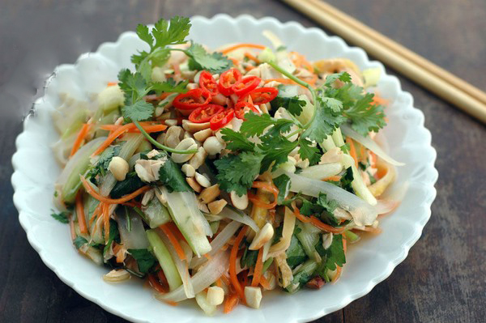

Gỏi gà ngó sen

Nguyên Liệu:
- Ngó sen tươi: 400g
- Dưa leo: 2 quả
- Hành tây: 1 củ
- Cà rốt: 1 củ
- Lạc rang: 60g
- Hành phi thơm: 60g
- Chanh tươi: 1 quả
- Ớt sừng: 1 quả
- Tỏi: 3-4 nhánh
- Rau răm: 1 mớ nhỏ
- Gia vị: Muối, hạt tiêu, bột ngọt, nước mắm, đường.
Cách làm:
Bước 1:
- Thịt gà sau khi mua về các bạn nên nhặt sạch phần lông còn sót và rửa sạch sẽ. Sau đó, cho thịt gà vào xoong đổ ngập nước và luộc
chín tới, vớt thịt gà ra rổ để cho nguội.
- Ngó sen cắt khúc khoảng 5-7cm rồi rửa thật sạch. Cho nước cốt chanh vào bát thêm đường và chút nước khuấy đều cho cho ngó sen vào ngâm
khoảng 15 phút và vớt ra để cho ráo nước.
- Dưa leo ngâm với nước muối, rửa sạch và thái lát mỏng để riêng ra đĩa.
- Hành tây thái lát mỏng, rồi cho vào ngâm cùng với ngó sen.
- Cà rốt nạo vỏ, rửa sạch và bào sợi mỏng.
- Rau răm rửa sạch, nhặt lá non, cắt nhỏ để riêng ra đĩa.
- Lạc rang chín, bóc vỏ lụa, giã dập.
Bước 2:
- Công đoạn tiếp theo của hướng dẫn làm gỏi gà ngó sen, các bạn tiến hành xé nhỏ thịt gà ra bát to rồi cho thêm bột canh, hạt tiêu và bột
ngọt vào trộn đều cho ngấm đều gia vị.
- Tiếp tục cho đường, nước cốt chanh và nước mắm, 2 thìa nước lọc vào bát khuấy đều. Sau đó, trộn đều ngó sen cùng dưa leo, hành tây, cà rốt
và nước mắm pha ở trên vào trộn thật đều tay cho ngấm gia vị.
- Các bạn để món gỏi trong vòng 10-15 phút cho ngấm đều gia vị, rồi bày ra đĩa to cho thêm lạc rang cùng rau răm và thưởng thức món gỏi gà ngó sen ngon tuyệt nhé.